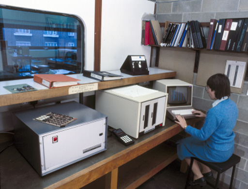
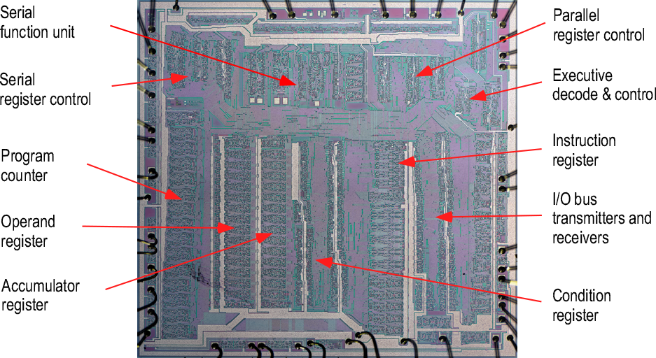

The Ferranti F100-L Microprocessor¶
The Ferranti F100-L was the first European designed and manufactured 16-bit microprocessor[1].
Launched in 1976, the F100-L was designed by Ferranti Computer Systems Ltd in their Bracknell, UK design centre. The chips were then fabricated in Ferranti Electronics Ltd’s Gem Mill works in Manchester.
The F100-L project started in the early 1970s with the intention of creating complete microprocessor based solutions for military applications as well as serving the needs of various Ferranti divisons.[5] The military requirement included the ability to operate over a wide temperature range of -55C to +125C and to be resistant to the effects of radiation. The 16 bit word size was chosen as the system was seen to be a way of downsizing existing applications running using mini-computers and software.
As well as being one of the first of the 16 bit processors the F100-L was unusual in that it was designed using a bipolar technology (Common Diffusion Isolation, or CDI) when other manufacturers had already turned to planar MOS processes to improve component densities. The choice of bipolar technology was driven by the radiation hardness requirement and eventually it was shown that the F100-L was almost totally latch-up resistant even after significant doses of radiation.[11] Fortunately then, Ferranti were already technology leaders in the fabrication and application of bipolar design for both linear and logical applications through their Common Diffusion Isolation (CDI) process.
F100-L Family Support Chips¶
Although the F100-L was a self-contained microprocessor, it was always intended to be part of a chip set. By the time the CPU was in production in 1977 two only two of these companion chips were available, the F111 and F112. Additional family members were added starting with the F113, F114 and ZN1001 in 1978.[16]
| Part No | Function | Pkg |
| ZN1001 | Clock Generator a general purpose oscillator requiring a crystal to define the clock rate and an RC network to define pulse width. | DIP16 |
| F101-L | Single chip co-processor implementing 2’s complement multipy and divide functions, performing a 16 bit multiply in around 8uS and a division in around 10uS [5] | DIP40 |
| F111-L | Control interface chip, usually sold together with the F112-L to handle all system interfacing including DMA channel control. | DIP40 |
| F112-L | Data interface chip used to connect any system device to the IO bus. | DIP40 |
| F113-L | High speed memory interface providing all necessary control signals for ROM and RAM handling with no requirement for additional ‘glue’. The F113 provided the highest speed memory access for circuits implemented with TTL technologies and dissipated around 350mW[5]. | DIP24 |
| F114-L | Medium speed, lower power memory interface with similar features to the F113-L above. This part was more suitable for battery operation with reduced performance but also a reduced power draw of just 25mW[5]. | DIP24 |
| F115-L | Real Time Interrupt handler, can be used with an external crystal to generate real time interrupt at one of 15 rates selectable by hardware or software control. An external device and also generate interrupts using the F115 logic. | DIP24 |
| F117-L | Two channel interrupt controller provides full vectored interrupt capability for two external devices connected to an F100-L system. | DIP24 |
The chip sets were designed to allow F100-L systems to be constructed with a minimum of glue logic. Like the F100-L the rest of the chipset also needed to be radiation hard, and so was also built in CDI technology. Unlike the processor however, a good number of the the support chips were implemented as gate arrays. For example the F111, F112, F113 and F115 are all implemented on 2000 series ULAs.
The most common combination of chips was also available as a multi-chip-module. This thick film module was sold as the FBH5092 and packaged up an F100-L, F101-L, clock generator and two F112-L data interfaces onto a leadless ceramic chip carrier which in turn was bonded to the lead frame of a ceramic 64 pin package.
Pricing and Commercial History¶
At the launch in 1976 the CPU alone was priced at 57UKP in quantities of 100. [1,3] By 1978 prices had reduced somewhat to 39UKP for the processor and a support chip set of an F111-L and 2 F112-L’s available for an additional 18KUP.[4] The table below shows costs for a selection of microprocessors available in 1978[15]
| Manufacturer | Chip Number | Datapath/ Address bus Width | Cost (Qty of 100) | |
| Mil Spec | Commercial | |||
| Ferranti | F100-L | 16/15 | $31 | $31 |
| Texas Instruments | SBP9900NJ | 16/15 | $425 | $71 |
| Intersil | IMS6100 | 12/12 | $53 | $15 |
| Zilog | Z80 | 8/16 | $165 | $25 |
| Motorola | MC6800 | 8/16 | $76 | $18 |
| MOS Technology | MCS6502 | 8/16 | N/A | $11 |
| Intel | MCS8080A | 8/16 | $32 | $13 |
| Nat. Semiconductor | SC/MP | 8/12 | N/A | $9 |
| Advaned Micro. Devices | Am2901A | 4/design. dependent | $71 | $15 |
The F100-L represented very good value for a military spec part, but was less competitive with parts from other manufacturers designed and packaged for less rigorous commercial requirements, e.g. having an operating range requirement of 0C to +85C rather than -55C to +125C. This made the F100-L less attractive for use in the nascent personal computer market created by the 8 bit processors. Additionally many of these 8 bit processors actually provided 16 bit addressing and even some 16 bit (double word) data processing. The Zilog Z80 is a good example of this with a number of internal registers which can be paired to perform 16 bit operations. Continuing this comparison, by 1979 it was estimated that only 5000 F100-L parts had been manufactured in total[6]. Zilog on the other hand sold 100,000 Z80s into Tandy in 1978 alone for inclusion in their Tandy TRS-80 computer[7].
Although no other third party commercial computer offerings were based on this CPU, Ferranti didn’t miss out completely on the home and personal computer boom: their dominant position as a provider of semi-custom ICs using their ULA technology made them the first choice for many manufacturers in cost reducing their own designs. Ferranti ULAs powered many of the largest selling European machines, including most of those from Sinclair and Acorn.
Ferranti made and sold their own computer system based around the F100-L. This went on sale in 1980 at a single unit cost of 5800UKP for a system with two floppy drives[13]. The Science Museum has a photograph of this system being used in City University, London:
Selling into its originally intended military markets the F100-L appears to have had some longevity and even spawned a successor with expanded memory addressing abilities in 1984 - the F200-L.[14] Almost simultaneously with Ferranti’s ill-fated acquisition of the US technology company International Signal and Control in 1987, their chip business was sold to Plessey for £30M[2]. At that time both F200 and F100, as well as the ULA business, were listed as noteworthy assets. Plessey (later merged with GEC to form GPT) were still building some number of F200’s in 1992, and support chips including the F113 as late as 1995. So, although little information is publicly available on Ferranti turn-key systems for military applications, these generated sufficient demand to keep the processor and support chips in production from the original 1976 launch right up into the mid 1990s.
Applications¶
The F100-L was the subject of a number of application studies and trials although it’s not clear how many of these resulted in sales of more than sample quantities.
The most reported application was the F100-L’s inclusion in the University of Surrey’s UoSAT program, where the F100-L was the heart of the secondary computer unit launched into space. [9,11]
This section will list briefly a number of other application trials reported in the literature including uses
- in Helicopter Engine Management control [17]
- in gas turbine engine control
- as a standard spacecraft compute module
- for control of nuclear test equipment
Silicon Implementation¶
Although the F100-L uses the same CDI technology as the company’s ULA, the CPU itself is a full-custom design. The die is approximately square, 5.8mm per side giving an area of 33.64sqmm. The die contains around 7000 individual components. [10] The following figure (recreated from a new die photograph but using Grundy’s original labelling) shows the main areas of the chip as described in the Architecture section later.
Preservation¶
Since the F100-L didn’t make it into any notable computer systems, there are no significant displays of the hardware in any science or technology museums.
The Museum of Science and Industry (MOSI) in Manchester has a paperweight memento of a single packaged chip encased in perspex with the legend “F100-L the world’s most advanced 16 bit microprocessor.” MOSI also holds the Ferranti Archive, including company documents, sales and marketing materials relating to the product line.
The Centre for Computing History (CCH) in Cambridge has a couple of hardware artifacts but these are held in storage rather than on general display. Of the items they hold, the control handset from the F100-L microcomputer system is the most accessible. This unit has a complete instruction set summary table printed in the reverse and a transcript of that is included in the Appendices here. Other than the handset they also have a board, possibly from an F100-L computer system with F112-L and F101-L ICs.